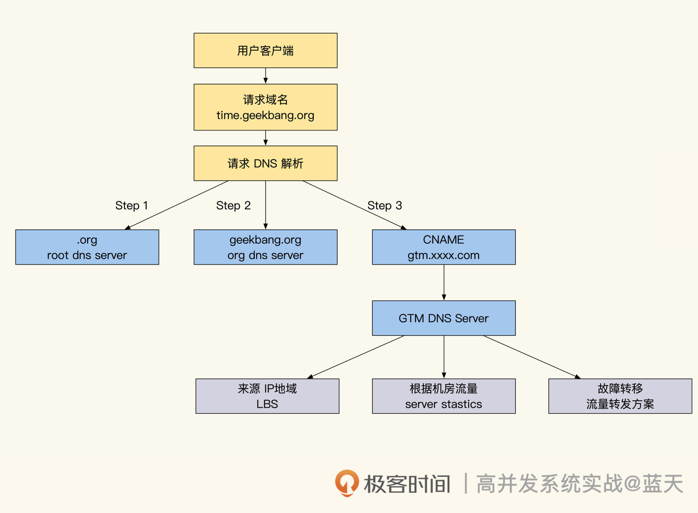

- 00 开篇词 高并发系统，技术实力的试金石.md.html
- 01 结构梳理：大并发下，你的数据库表可能成为性能隐患.md.html
- 02 缓存一致：读多写少时，如何解决数据更新缓存不同步？.md.html
- 03 Token：如何降低用户身份鉴权的流量压力？.md.html
- 04 同城双活：如何实现机房之间的数据同步？.md.html
- 05 共识Raft：如何保证多机房数据的一致性？.md.html
- 06 领域拆分：如何合理地拆分系统？.md.html
- 07 强一致锁：如何解决高并发下的库存争抢问题？.md.html
- 08 系统隔离：如何应对高并发流量冲击？.md.html
- 09 分布式事务：多服务的2PC、TCC都是怎么实现的？.md.html
- 10 稀疏索引：为什么高并发写不推荐关系数据库？.md.html
- 11 链路追踪：如何定制一个分布式链路跟踪系统 ？.md.html
- 12 引擎分片：Elasticsearch如何实现大数据检索？.md.html
- 13 实时统计：链路跟踪实时计算中的实用算法.md.html
- 14 跳数索引：后起新秀ClickHouse.md.html
- 15 实践方案：如何用C++自实现链路跟踪？.md.html
- 16 本地缓存：用本地缓存做服务会遇到哪些坑？.md.html
- 17 业务脚本：为什么说可编程订阅式缓存服务更有用？.md.html
- 18 流量拆分：如何通过架构设计缓解流量压力？.md.html
- 19 流量调度：DNS、全站加速及机房负载均衡.md.html
- 20 数据引擎：统一缓存数据平台.md.html
- 21 业务缓存：元数据服务如何实现？.md.html
- 22 存储成本：如何推算日志中心的实现成本？.md.html
- 23 网关编程：如何通过用户网关和缓存降低研发成本？.md.html
- 24 性能压测：压测不完善，效果减一半.md.html
- 答疑课堂 思考题答案（一）.md.html
- 结束语 为者常成，行者常至.md.html
- 捐赠
19 流量调度：DNS、全站加速及机房负载均衡
你好，我是徐长龙。
上节课我们学习了如何从架构设计上应对流量压力，像直播这类的服务不容易预估用户流量，当用户流量增大到一个机房无法承受的时候，就需要动态调度一部分用户到多个机房中。
同时，流量大了网络不稳定的可能性也随之增加，只有让用户能访问就近的机房，才能让他们的体验更好。
综合上述考量，这节课我们就重点聊聊流量调度和数据分发的关键技术，帮你弄明白怎么做好多个机房的流量切换。
直播服务主要分为两种流量，一个是静态文件访问，一个是直播流，这些都可以通过CDN分发降低我们的服务端压力。
对于直播这类读多写多的服务来说，动态流量调度和数据缓存分发是解决大量用户在线互动的基础，但是它们都和DNS在功能上有重合，需要一起配合实现，所以在讲解中也会穿插CDN的介绍。
DNS域名解析及缓存
服务流量切换并没有想象中那么简单，因为我们会碰到一个很大的问题，那就是DNS缓存。DNS是我们发起请求的第一步，如果DNS缓慢或错误解析的话，会严重影响读多写多系统的交互效果。
那DNS为什么会有刷新缓慢的情况呢？这需要我们先了解DNS的解析过程，你可以对照下图听我分析：
客户端或浏览器发起请求时，第一个要请求的服务就是DNS，域名解析过程可以分成下面三个步骤：
1.客户端会请求ISP商提供的DNS解析服务，而ISP商的DNS服务会先请求根DNS服务器；- 2.通过根DNS服务器找到.org顶级域名DNS服务器；- 3.再通过顶级域名服务器找到域名主域名服务器（权威DNS）。
找到主域名服务器后，DNS就会开始解析域名。
一般来说主域名服务器是我们托管域名的服务商提供的，而域名具体解析规则和TTL时间都是我们在域名托管服务商管理系统里设置的。
当请求主域名解析服务时，主域名服务器会返回服务器所在机房的入口IP以及建议缓存的 TTL时间，这时DNS解析查询流程才算完成。
在主域名服务返回结果给ISP DNS服务时，ISP的DNS服务会先将这个解析结果按TTL规定的时间缓存到服务本地，然后才会将解析结果返回给客户端。在ISP DNS缓存TTL有效期内，同样的域名解析请求都会从ISP缓存直接返回结果。
可以预见，客户端会把DNS解析结果缓存下来，而且实际操作时，很多客户端并不会按DNS建议缓存的TTL时间执行，而是优先使用配置的时间。
同时，途经的ISP服务商也会记录相应的缓存，如果我们域名的解析做了改变最快也需要服务商刷新自己服务器的时间（通常需要3分钟）+TTL时间，才能获得更新。
事实上比较糟糕的情况是下面这样：
// 全网刷新域名解析缓存时间
客户端本地解析缓存时间30分钟
+ 市级 ISP DNS缓存时间 30分钟
+ 省级 ISP DNS缓存时间 30分钟
+ 主域名服务商 刷新解析服务器配置耗时 3分钟
+ ... 后续ISP子网情况 略
= 域名解析实际更新时间 93分钟以上
为此，很多域名解析服务建议我们的TTL设置在30分钟以内，而且很多大型互联网公司会在客户端的缓存上，人为地减少缓存时间。如果你设置的时间过短，虽然刷新很快，但是会导致服务请求很不稳定。
当然93分钟是理想情况，根据经验，正常域名修改后全国DNS缓存需要48小时，才能大部分更新完毕，而刷全世界缓存需要72小时，所以不到万不得已不要变更主域名解析。
如果需要紧急刷新，我建议你购买强制推送解析的服务去刷新主干ISP的DNS缓冲，但是，这个服务不光很贵，而且只能覆盖主要城市主干线，个别地区还是会存在刷新缓慢的情况（取决于宽带服务商）。不过整体来说，确实会加快DNS缓存的刷新速度。
DNS刷新缓慢这个问题，给我们带来了很多困扰，如果我们做故障切换，需要三天时间才能够彻底切换，显然这会给系统的可用性带来毁灭性打击。好在近代有很多技术可以弥补这个问题，比如CDN、GTM、HttpDNS等服务，我们依次来看看。
CDN全网站加速
可能你会奇怪“为什么加快刷新DNS缓存和CDN有关系？”
在讲如何实现CDN加速之前，我们先了解下CDN和它的网站加速技术是怎么回事。网站加速对于读多写多的系统很重要，一般来说，常见的CDN提供了静态文件加速功能，如下图：
当用户请求CDN服务时，CDN服务会优先返回本地缓存的静态资源。
如果CDN本地没有缓存这个资源或者这个资源是动态内容（如API接口）的话，CDN就会回源到我们的服务器，从我们的服务器获取资源；同时，CDN会按我们服务端返回的资源超时时间来刷新本地缓存，这样可以大幅度降低我们机房静态数据服务压力，节省大量带宽和硬件资源的投入。
除了加速静态资源外，CDN还做了区域化的本地CDN网络加速服务，具体如下图：

CDN会在各大主要省市中部署加速服务机房，而且机房之间会通过高速专线实现互通。
当客户端请求DNS做域名解析时，所在省市的DNS服务会通过GSLB返回当前用户所在省市最近的CDN机房IP，这个方式能大大减少用户和机房之间的网络链路节点数，加快网络响应速度，还能减少网络请求被拦截的可能。
客户端请求服务的路径效果如下图所示：
如果用户请求的是全站加速网站的动态接口，CDN节点会通过 CDN内网用最短最快的网络链路，将用户请求转发到我们的机房服务器。
相比客户端从外省经由多个ISP服务商网络转发，然后才能请求到服务器的方式，这样做能更好地应对网络缓慢的问题，给客户端提供更好的用户体验。
而网站做了全站加速后，所有的用户请求都会由CDN转发，而客户端请求的所有域名也都会指向CDN，再由CDN把请求转到我们的服务端。
在此期间，如果机房变更了CDN提供服务的IP，为了加快DNS缓存刷新，可以使用CDN内网DNS的服务（该服务由CDN供应商提供）去刷新CDN中的DNS缓存。这样做客户端的DNS解析是不变的，不用等待48小时，域名刷新会更加方便。
由于48小时刷新缓存的问题，大多数互联网公司切换机房时，都不会采用改DNS解析配置的方式去做故障切换，而是依托CDN去做类似的功能。但CDN入口出现故障的话，对网站服务影响也是很大的。
国外为了减少入口故障问题，配合使用了anycast技术。通过anycast技术，就能让多个机房服务入口拥有同样的IP，如果一个入口发生故障，运营商就会将流量转发到另外的机房。但是，国内因为安全原因，并不支持anycast技术。
除了CDN入口出现故障的风险外，请求流量进入CDN后，CDN本地没有缓存回源而且本地网站服务也发生故障时，也会出现不能自动切换源到多个机房的问题。所以，为了加强可用性，我们可以考虑在CDN后面增加GTM。
GTM全局流量管理
在了解GTM和CDN的组合实现之前，我先给你讲讲GTM的工作原理和主要功能。
GTM是全局流量管理系统的简称。我画了一张工作原理图帮你加深理解：

当客户端请求服务域名时，客户端先会请求DNS服务解析请求的域名。而客户端请求主域名DNS服务来解析域名时，会请求到 GTM服务的智能解析DNS。
相比传统技术，GTM还多了三个功能：服务健康监控、多线路优化和流量负载均衡。
首先是服务健康监控功能。GTM会监控服务器的工作状态，如果发现机房没有响应，就自动将流量切换到健康的机房。在此基础上，GTM还提供了故障转移功能，也就是根据机房能力和权重，将一些用户流量转移到其他机房。
其次是多线路优化功能，国内宽带有不同的服务提供商（移动、联通、电信、教育宽带），不同的宽带的用户访问同提供商的网站入口IP性能最好，如果跨服务商访问会因为跨网转发会加大请求延迟。因此，使用GTM可以根据不同机房的CDN来源，找到更快的访问路径。
GTM还提供了流量负载均衡功能，即根据监控服务的流量及请求延迟情况来分配流量，从而实现智能地调度客户端的流量。
当GTM和CDN网站加速结合后会有更好的效果，具体组合方式如下图所示：
由于GTM和CDN加速都是用了CNAME做转发，我们可以先将域名指向CDN，通过CDN的GSLB和内网为客户端提供网络加速服务。而在CDN回源时请求会转发到GTM解析，经过GTM解析DNS后，将CDN的流量转发到各个机房做负载均衡。
当我们机房故障时，GTM会从负载均衡列表快速摘除故障机房，这样既满足了我们的网络加速，又实现了多机房负载均衡及更快的故障转移。
不过即使使用了CDN+GTM，还是会有一批用户出现网络访问缓慢现象，这是因为很多ISP服务商提供的DNS服务并不完美，我们的用户会碰到DNS污染、中间人攻击、DNS解析调度错区域等问题。
为了缓解这些问题，我们需要在原有的服务基础上，强制使用HTTPS协议对外服务，同时建议再配合GPS定位在客户端App启用HttpDNS服务。
HttpDNS服务
HttpDNS服务能够帮助我们绕过本地ISP提供的DNS服务，防止DNS劫持，并且没有DNS域名解析刷新的问题。同样地，HttpDNS也提供了GSLB功能。HttpDNS还能够自定义解析服务，从而实现灰度或A/B测试。
一般来说，HttpDNS只能解决App端的服务调度问题。因此客户端程序如果用了HttpDNS服务，为了应对HttpDNS服务故障引起的域名解析失败问题，还需要做备选方案。
这里我提供一个解析服务的备选参考顺序：一般会优先使用HttpDNS，然后使用指定IP的DNS服务，再然后才是本地ISP商提供的DNS服务，这样可以大幅度提高客户端DNS的安全性。
当然，我们也可以开启DNS Sec进一步提高DNS服务的安全性，但是上述所有服务都要结合我们实际的预算和时间精力综合决策。
不过HttpDNS这个服务不是免费的，尤其对大企业来说成本更高，因为很多HttpDNS服务商提供的查询服务会按请求次数计费。
所以，为了节约成本我们会设法减少请求量，建议在使用App时，根据客户端链接网络的IP以及热点名称（Wifi、5G、4G）作为标识，做一些DNS缓存。
业务自实现流量调度
HttpDNS服务只能解决DNS污染的问题，但是它无法参与到我们的业务调度中，所以当我们需要根据业务做管控调度时，它能够提供的支持有限。
为了让用户体验更好，互联网公司结合HttpDNS的原理实现了流量调度，比如很多无法控制用户流量的直播服务，就实现了类似HttpDNS的流量调度服务。调度服务常见的实现方式是通过客户端请求调度服务，调度服务调配客户端到附近的机房。
这个调度服务还能实现机房故障转移，如果服务器集群出现故障，客户端请求机房就会出现失败、卡顿、延迟的情况，这时客户端会主动请求调度服务。如果调度服务收到了切换机房的命令，调度服务给客户端返回健康机房的IP，以此提高服务的可用性。
调度服务本身也需要提高可用性，具体做法就是把调度服务部署在多个机房，而多个调度机房会通过Raft强一致来同步用户调度结果策略。
我举个例子，当一个用户请求A机房的调度时，被调度到了北京机房，那么这个用户再次请求B机房调度服务时，短期内仍旧会被调度到北京机房。除非客户端切换网络或我们的服务机房出现故障，才会做统一的流量变更。
为了提高客户端的用户体验，我们需要给客户端调配到就近的、响应性能最好的机房，为此我们需要一些辅助数据来支撑调度服务分配客户端，这些辅助数据包括IP、GPS定位、网络服务商、ping网速、实际播放效果。
客户端会定期收集这些数据，反馈给大数据中心做分析计算，提供参考建议，帮助调度服务更好地决策当前应该链接哪个机房和对应的线路。
其实这么做就相当于自实现了GSLB功能。但是自实现GSLB功能的数据不是绝对正确的，因为不同省市的DNS服务解析的结果不尽相同，同时如果客户端无法联通，需要根据推荐IP挨个尝试来保证服务高可用。
此外，为了验证调度是否稳定，我们可以在客户端暂存调度结果，每次客户端请求时在header中带上当前调度的结果，通过这个方式就能在服务端监控有没有客户端错误请求到其他机房的情况。
如果发现错误的请求，可以通过机房网关做类似CDN全站加速一样的反向代理转发，来保证客户端稳定。
对于直播和视频也需要做类似调度的功能，当我们播放视频或直播时出现监控视频的卡顿等情况。如果发现卡顿过多，客户端应能够自动切换视频源，同时将情况上报到大数据做记录分析，如果发现大规模视频卡顿，大数据会发送警报给我们的运维和研发伙伴。
总结
域名是我们的服务的主要入口，请求一个域名时，首先需要通过DNS将域名解析成IP。但是太频繁请求DNS的话，会影响服务响应速度，所以很多客户端、ISP服务商都会对DNS做缓存，不过这种多层级缓存，直接导致了刷新域名解析变得很难。
即使花钱刷新多个带宽服务商的缓存，我们个别区域仍旧需要等待至少48小时，才能完成大部分用户的缓存刷新。
如果我们因为网站故障等特殊原因必须切换IP时，带来的影响将是灾难性的，好在近几年我们可以通过CDN、GTM、HttpDNS来强化我们多机房的流量调度。
但CDN、GTM都是针对机房的调度，对业务方是透明的。所以，在更重视用户体验的高并发场景中，我们会自己实现一套调度系统。
在这种自实现方案中，你会发现自实现里的思路和HttpDNS和GSLB的很类似，区别在于之前的服务只是基础服务，我们自实现的服务还可以快速地帮助我们调度用户流量。
而通过HttpDNS来实现用户切机房，切视频流的实现无疑是十分方便简单的，只需要在我们App发送请求的封装上更改链接的IP，即可实现业务无感的机房切换。
思考题
视频、WebSocket这一类长链接如何动态切换机房？
欢迎你在留言区与我交流讨论，我们下节课见！
© 2019 - 2023 Liangliang Lee. Powered by gin and hexo-theme-book.